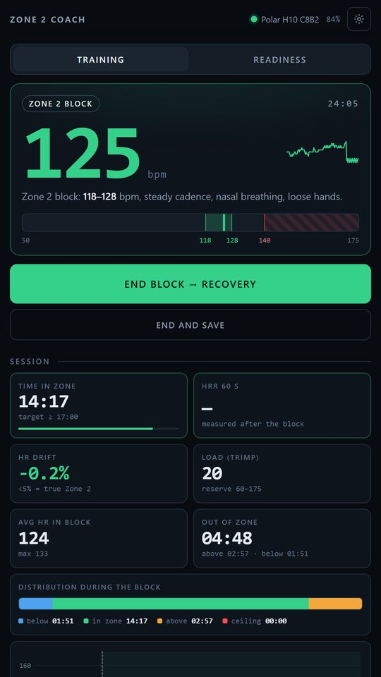
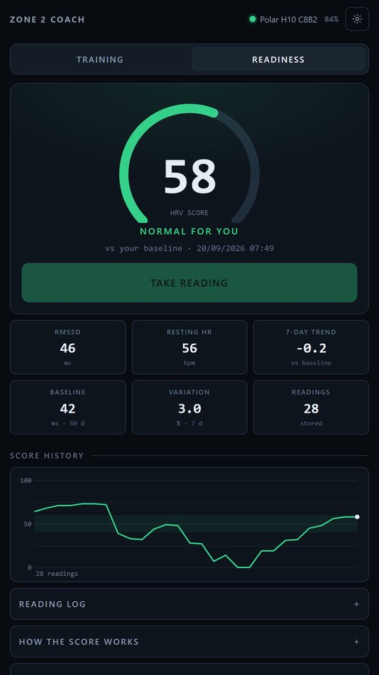
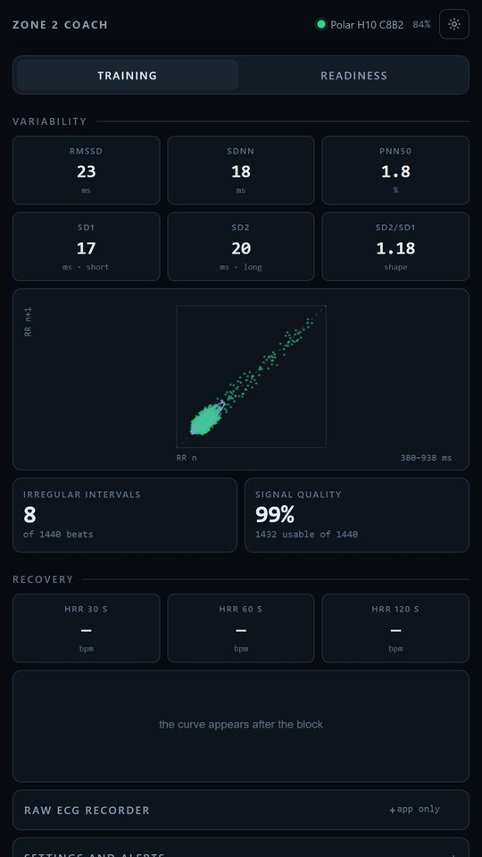

Smetti di sorvegliare il tuo battito. Lascia che ti risponda.
Zone 2 Coach trasforma qualsiasi fascia cardio Bluetooth in un coach sul telefono. Un suono parte appena esci dalla tua zona, anche a schermo spento e col telefono in silenzioso.

Tre cose che fa
Ti parla
Un suono quando superi il limite, uno più grave quando scendi sotto il minimo, un segnale quando rientri. Una soglia massima separata suona sempre. Usa il volume della sveglia, quindi funziona col telefono in silenzioso.
Resta attiva
Un servizio in primo piano tiene collegata la fascia a schermo spento o con l'app in background. La registrazione non ha limiti di tempo.
Ricorda
Tempo in zona, deriva cardiaca, carico di allenamento, recupero a 30, 60 e 120 secondi, HRV di seduta e uno storico da rileggere.
8 mattine. 1 linea di base tutta tua.
Ogni mattina stai fermo tre minuti con la fascia. Il primo minuto si scarta per far assestare il battito; l'RMSSD si calcola sul resto.
Per le prime sette letture il punteggio è su una scala assoluta, che ti confronta con la media della gente e dice poco. Dall'ottava si confronta con la tua media e la tua variabilità: 50 è il tuo giorno normale.
Descrive il tuo andamento. Non è una valutazione di salute.

Gratis e Pro
Gratis, senza limiti di tempo
- Allarmi di zona e soglia massima
- Registrazione a schermo spento
- Recupero a 30, 60 e 120 s
- Deriva cardiaca e carico di allenamento (TRIMP)
- HRV di seduta: RMSSD, SDNN, pNN50, Poincaré
- Storico delle sedute
- Modalità demo, senza fascia
- Le tue prime 8 letture Readiness
Pro, una tantum, senza abbonamento
- Readiness: punteggio HRV quotidiano di 3 minuti rispetto alla tua linea di base, andamento a 7 giorni e storico
- Registratore ECG grezzo (Polar H10), salvato in CSV
- Esportazione CSV di sedute e letture
Il prezzo è quello mostrato da Google Play per il tuo paese (3,99 € in Italia).
Costruita su misure consolidate
Niente è inventato. I numeri sono quelli che la scienza dello sport usa già, calcolati sul tuo telefono:
- RMSSD
- la misura standard nel dominio del tempo della variabilità cardiaca a breve termine (Task Force di ESC e NASPE, 1996).
- Deriva cardiaca
- di quanto sale il battito, a parità di sforzo, tra i primi e gli ultimi cinque minuti del blocco. Sotto il 5% lo sforzo è aerobico.
- TRIMP
- carico di allenamento come durata per intensità, pesato sulla tua riserva cardiaca (Banister).
- Recupero
- di quanti battiti scende il cuore 30, 60 e 120 secondi dopo che ti fermi.
Riferimento: Task Force of the European Society of Cardiology and the North American Society of Pacing and Electrophysiology (1996). Heart rate variability: standards of measurement, physiological interpretation and clinical use. Circulation 93(5):1043-1065.

Fatta da una persona sola
Zone 2 Coach non ha account, pubblicità né analisi, quindi un messaggio è l'unico modo che ho per sapere cosa funziona e cosa no. Dimmi cosa manca o non va: leggo e rispondo a tutto.
Domande
Quali fasce funzionano?
Qualsiasi fascia Bluetooth LE col profilo standard della frequenza cardiaca: Polar, Garmin, Wahoo, Coospo, Magene e la maggior parte delle altre. Un sensore ottico da polso non basta: per l'HRV servono gli intervalli battito per battito di una fascia. Il registratore ECG grezzo richiede una Polar H10.
Funziona a schermo spento?
Sì. Un servizio in primo piano tiene collegata la fascia a schermo spento o con l'app in background, e gli allarmi usano il volume della sveglia: si sentono anche col telefono in silenzioso.
Posso provarla senza fascia?
Sì. La modalità demo simula un battito: senti gli allarmi di zona e vedi ogni schermata prima ancora di indossare qualcosa.
Che fine fanno i miei dati?
Restano sul telefono. Niente account, analisi, pubblicità o server. L'unica parte che parla con Google è la fatturazione di Google Play, e solo per l'acquisto Pro facoltativo.
È un dispositivo medico?
No. È software per l'allenamento: non diagnostica nulla e non sostituisce un parere medico. La funzione ECG è un registratore, non un analizzatore.
iPhone? Altre lingue?
Per ora solo Android, e l'interfaccia è in inglese. Se lo chiedono in tanti, può cambiare.